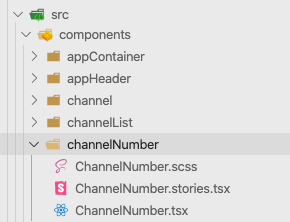

Dalibor Schön
When you design UI component it usually has some states.
To develop and run components in isolation we opted for this structure
Every component has own:
*.scss style*.tsx file with component rendering code*.story.tsx - Storybook mocks for isolated run with desired statesOptionally component can also have:
*.container.tsx - data wrapper, if component needs to observe shared Redux store*.test.tsx - UTs for nontrivial components*.mock.tsx - feed mocking data for UTs<ChannelNumber>
export default function ChannelNumber(
{ num = '', hasEvents = true }: IDChannelNumber
) {
const hasEventClass = hasEvents ? '' : ' -dimmed';
return (
{num}
);
}
const smallNum = { num: 1, hasEvents: true };
const bigNum = { num: 9999 };
const noNum = { hasEvents: true };
const noEvents = { num: 123, hasEvents: false };
storiesOf('ChannelNumber', module)
.addDecorator((story) => {story()})
.add('Small number', () =>